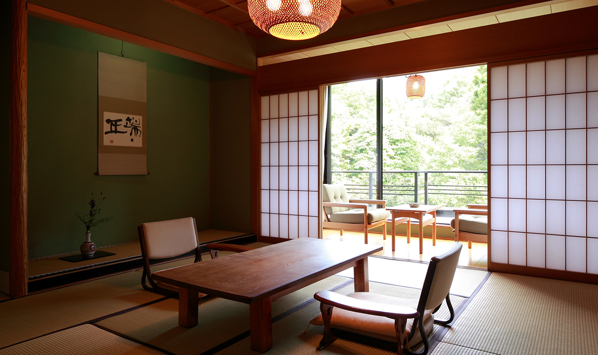
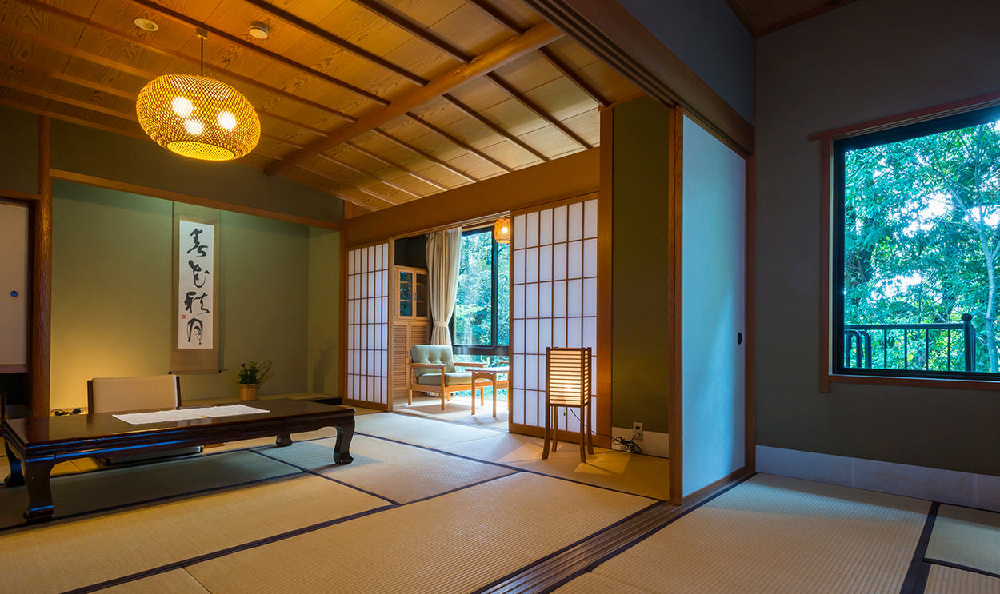
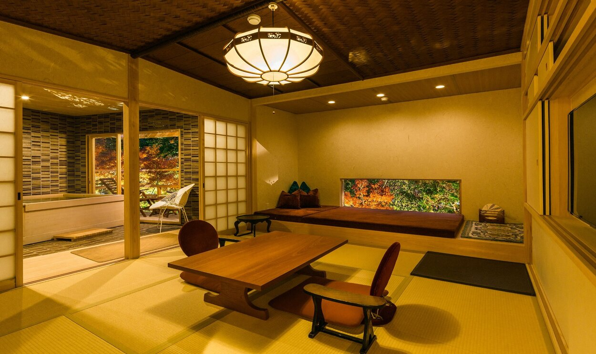
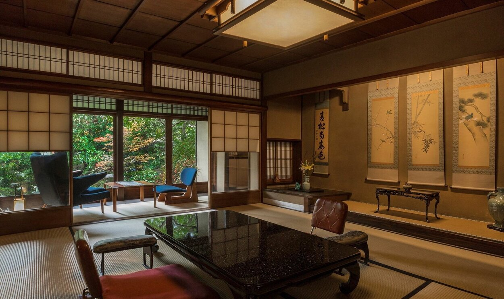
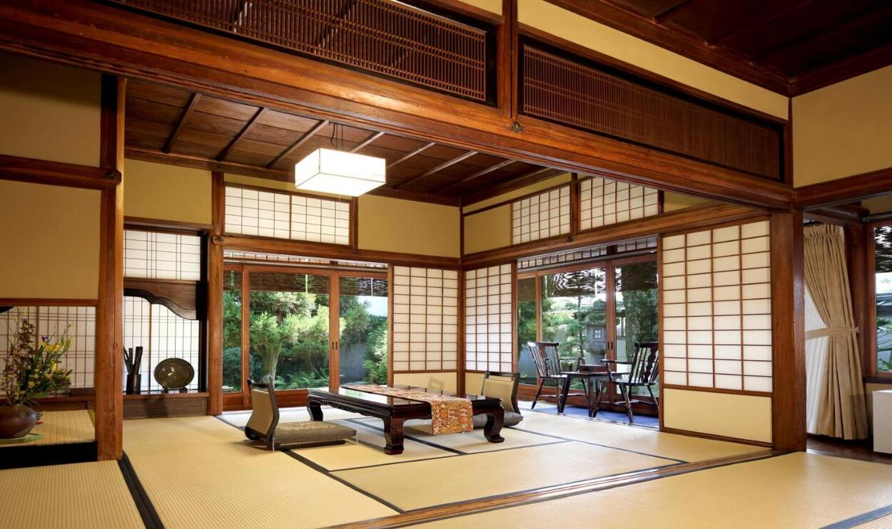
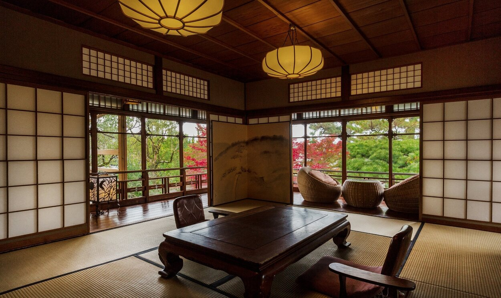

Hoshi ⋄ 星
Un espacio luminoso y acogedor, evocando la calma de una estrella solitaria en el cielo nocturno.

Tsuki ⋄ 月
Serenidad y contemplación, un refugio suave como la luz plateada de la luna sobre el río celestial.

Kawa ⋄ 川
Inspirada en el fluir del Amanogawa, un ambiente armónico que invita a la paz y al descanso.

Tanabata ⋄ 七夕
Decorada con toques festivos y delicados, recuerda la unión anual de Orihime y Hikoboshi a través de la Vía Láctea.

Sora ⋄ 空
Amplia y clara, transmite la sensación de inmensidad y libertad al contemplar el firmamento.

Hikoboshi ⋄ 彦星
Sobria y cálida, representa la fortaleza y la calma del guardián estelar que acompaña a Orihime.